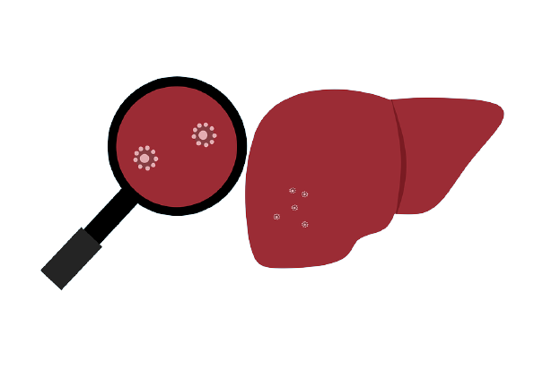

O que é?
A hepatite é quando o vírus entra no fígado e paralisa suas células, ocasionando degeneração no fígado, pode ser ocasionada por infecções virais, uso frequente
de medicamentos e substâncias tóxicas e consumo exagerado de bebidas alcoólicas. Existem alguns tipos de hepatite.
Hepatite crônica: A causa mais comuns deste tipo é o consumo exagerado de medicamentos, fazendo com que o fígado fique inflamado por pelo menos 6 meses.
Hepatite A: A principal forma de transmissão deste tipo é na ingestão de água e alimentos contaminados e também ao praticar relações sexuais sem preservativo.
Hepatite B: Este tipo é transmitido principalmente por fluídos corporais.
Hepatite C: É transmitido principalmente por fluídos corporais.
Hepatite alcoólica: Como o próprio nome já induz, este tipo de hepatite é causado pelo consumo excessivo de álcool.
Hepatite medicamentosa: Este tipo de hepatite é causado pelo consumo frequente de medicamentos fitoterápicos, que podem causar lesões no fígado.
Hepatite autoimune: Este tipo causa falha no sistema imunológico de forma que ele começa a produzir anticorpos que irão reagir contra o próprio fígado.
Sintomas
Os diferentes tipos de Hepatite fazem com que os sintomas apresentados por cada um sejam um tanto quanto diferentes.
Hepatite A: Normalmente pode não apresentar sintomas, porém quando se manifestam, os que mais prevalecem são: febre, náuseas e vômitos, mal-estar, desconforto
no abdômen, fezes esbranquiçadas, falta de apetite.
Hepatite B: Geralmente não apresenta sintomas, apenas é descoberta um tempo após a infecção, fazendo com que o vírus possa ter tomado dos caminhos
diferentes, a cura espontânea ou o desenvolvimento de alguma doença no fígado, como câncer ou cirrose.
Hepatite C: Não é muito comum, porém quando apresentam sintomas, eles são muito similares em relação ao A, a única distinção, é que você descobre essa hepatite
apenas em exame de sangue ou muitos anos depois da aquisição.
Hepatite Alcoólica: Em sua fase inicial são muito similares a Hepatite A, já em fase avançada, os sintomas são convulsões, acúmulo de líquido no abdômen,
insuficiência renal e do fígado.
Hepatite autoimune: Os sintomas não tem uma fase padrão para surgir, porém os sintomas são a fadiga, desconforto abdominal, aumento do fígado, dor nas articulações,
áreas de vermelhidão na pele.
Hepatite medicamentosa: Surgem repentinamente e os mais apresentados são: febre alta, náuseas e vômitos, mal-estar, coceira no corpo, dor no lado direito do abdômen.
Prevenção
De forma geral, para prevenir a hepatite devemos manter a higiene pessoal, evitar consumo descontrolado de álcool, de determinados medicamentos e utilizar
preservativo nas relações sexuais. Além de tomar as vacinas disponibilizadas nos postos de saúde.
Tratamento
No caso da Hepatite A, não existe tratamento além do repouso, que é considerado de extrema importância dependendo da condição o paciente. No caso da Hepatite B crônica,
antivirais são aceitos, já na C, antivirais são aceitos tanto fase crônica quanto na fase aguda.
Na Hepatite alcoólica, em casos graves, corticosteroides são prescritos, já na Hepatite autoimune, também são utilizados corticosteroides, porém com o acréscimo de
imunossupressores. No caso da Hepatite medicamentosa, o tratamento é apenas de suporte.
